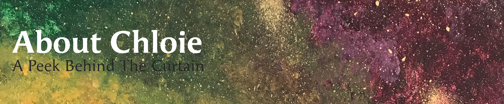

How Well Do You Know Chloie?
To prepare your mind for the questions I have prepared for you, here is a sneak peak of what you will be asked:
- What is your name?
- Do I really like spiders & snakes? (Look for the hint on this page)
- Would I rather be at the beach?
- Do I love fishing or do I love fishing?
- Is my brain both left & right dominant?
- Do I really have superpowers or is that a myth?
My Bio in Less Than 30 Seconds
- I am from Oregon, but have traveled the world.
- I graduated from Apprenti's Software Development program in 2019.
- I graduated from Oregon State Univesity with a BFA in Graphic Design in 2015.
- I read over 200 books a year.
- I am a code lover and typograhpy geek.
- I speak HTML, CSS, and JavaScript better than I do Japanese and Spanish.
- My friends say that I am boldly honest, incredibly courageous, and have fierce time management skills.
- In 2015, I started C2C Designs, my graphic design business.
- Working freelance is lonely: I am an extrovert.
- Though an extrovert, I do need time to recharge my batteries.
- I like working really early in the morning when it is very quiet and everyone is asleep.
Top 10 Places I Want To Visit
- Panama
- Dominica
- Jamaica
- Maldives
- Spain
- Hungary
- Taiwan
- Guam
- Mariana Islands
- Singapore